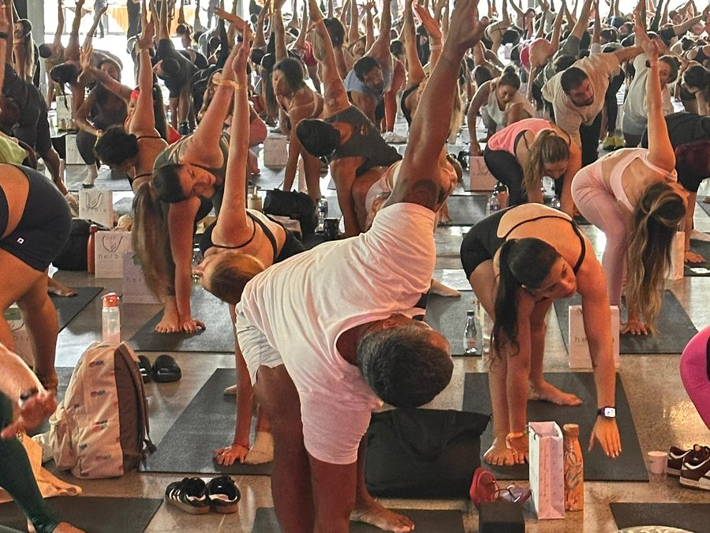
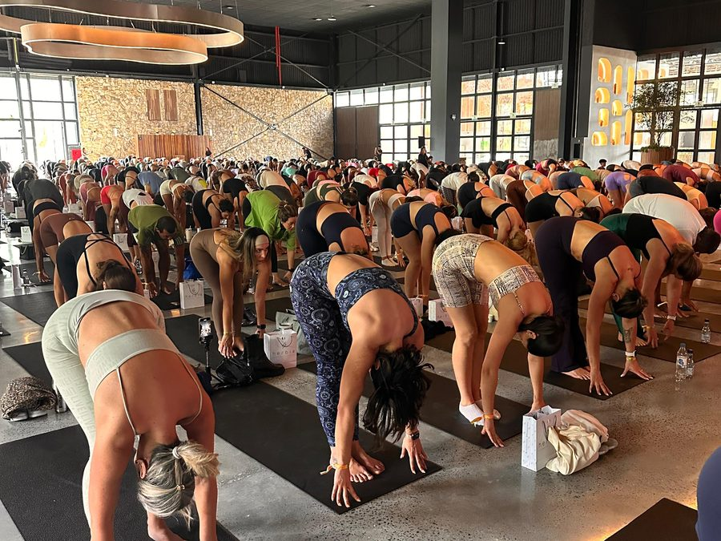
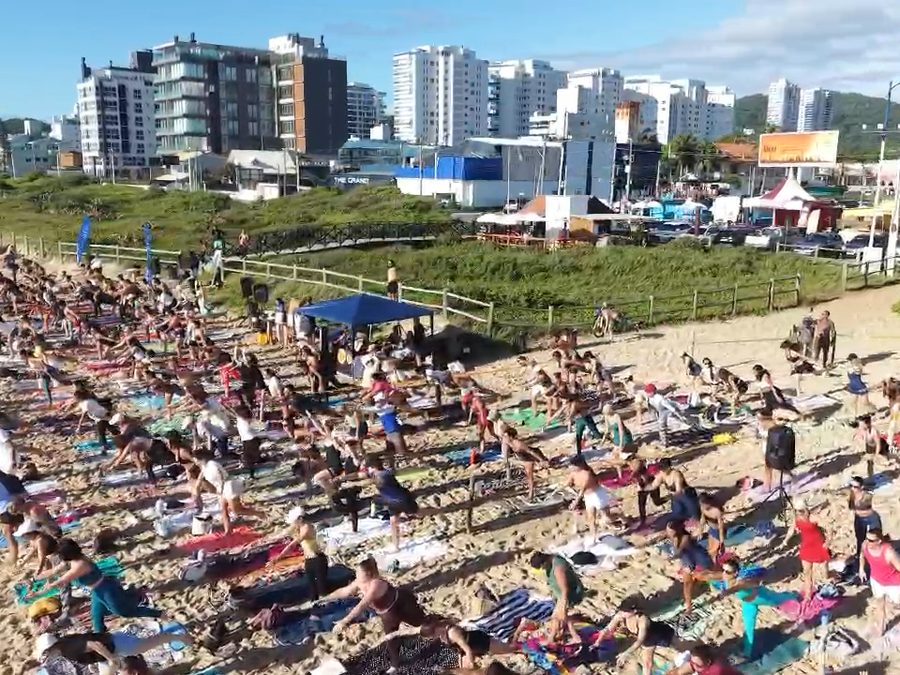

Uma metodologia completa de transformação para Corpo, Mente e Espírito — com acompanhamento pessoal, de onde você estiver.
O Yoga Galáctico não é uma plataforma de aulas de yoga.
É uma metodologia completa de transformação — com prática, acompanhamento pessoal e um plano criado para você.
Sinta a energia de praticar em grupo! Toda semana temos um encontro marcado ao vivo com a Tatá. Se não puder participar, não se preocupe: tudo fica gravado e disponível na plataforma.
Você nunca estará sozinha na sua evolução. Teremos um canal direto para você enviar suas dúvidas, compartilhar suas dificuldades e receber orientações reais sobre as suas práticas.
Sua jornada não tem fim. A plataforma cresce junto com você, recebendo novas aulas, meditações e ferramentas todos os meses nos diferentes módulos.
Não precisa de flexibilidade. Precisa de um começo.
As trilhas do Yoga Galáctico foram criadas para corpos reais, em rotinas reais — do zero, sem pré-requisitos.
Não precisa de tempo livre. Precisa de intenção.
Quinze minutos com presença valem mais do que uma hora distraída. As práticas cabem no seu dia como ele é.
Não precisa silenciar a mente. Precisa aprender a atravessá-la.
Aqui a meditação começa pelo movimento. O corpo entra primeiro, e a mente segue.
Não precisa ter tentado antes. Precisa de um caminho diferente.
O que você encontrará aqui não é mais um método — é uma metodologia criada para integrar quem você é por inteiro.
No Yoga Galáctico, acreditamos que a verdadeira transformação acontece quando Corpo, Mente e Espírito evoluem juntos.
Você não vive dividido. O corpo influencia a mente. A mente influencia o espírito. E o espírito transforma a forma como você sente, escolhe e vive. Por isso, cada aula, meditação e prática foi criada para atuar de forma integrada nessas três dimensões do seu ser.
Conheça os três pilares que sustentam a jornada do Yoga Galáctico:
O corpo é o templo através do qual você experiencia a vida. Se você vem sentindo tensão crônica, cansaço que o sono não resolve ou uma distância de si mesma — seu corpo está pedindo atenção.
Através das práticas do Yoga Galáctico, você vai desenvolver mais força, mobilidade e uma relação mais amorosa com o próprio corpo.
Uma mente acelerada dificilmente consegue ouvir a própria alma. Se você vive com ansiedade constante, pensamentos em loop ou dificuldade de descansar — sua mente está pedindo silêncio.
No Yoga Galáctico, a mente não é combatida — ela é acolhida. Você aprende a desacelerar por dentro e a atravessar pensamentos sem se perder neles.
Existe uma dimensão em você que vai além da rotina e das obrigações. Se você sente que vive no automático, distante de si mesma, com aquela sensação de que algo importante está faltando — seu espírito está pedindo reconexão.
No Yoga Galáctico, o Espírito é o retorno para o que é verdadeiro em você — através de práticas que ampliam a consciência e abrem espaço para uma vida mais inteira.
A Tríade Galáctica™ é o coração do Yoga Galáctico.
Ela une movimento, respiração, presença e consciência para que você não apenas pratique yoga — mas viva uma jornada real de transformação.
Se você sente que chegou o momento de cuidar de si por inteiro,
o Yoga Galáctico foi criado para você.



Palavras reais de quem já praticou com a Tata Vidal — de médicas a quem nunca tinha pisado num tapete de yoga.
Uma aula galáctica que vou guardar pra sempre no coração. Algumas coisas são pra viver profundamente — foi 100% entrega pro momento. Não tem como explicar.
O yoga permite o equilíbrio entre corpo, mente e espírito. Impossível não sair de uma prática se sentindo melhor do que antes. Gratidão por cada prática que me faz ser 1% melhor.
Já participei de muitos retiros e falo com propriedade: esse foi o mais marcante. Você é diferenciada, uma nova referência pra mim sobre yoga — e olha que sou "sommelier" de aula de yoga!
O yoga te desafia todo momento — te ensina a ter equilíbrio, flexibilidade, a se concentrar no presente e a respirar de forma consciente. Esse aprendizado a gente leva do tapete pra vida.
Pude me conectar com todo o poder do yoga. É sobre sentir — nossos pensamentos, nosso foco, nossa flexibilidade. Cada prática é um desafio e uma superação. Gratidão à minha mestre e professora.
Achava que yoga era só um exercício diferente. Com o tempo, virou um meio de me conectar com tudo — uma prática espiritual e mental que trouxe equilíbrio pra minha vida. Hoje não me imagino sem o yoga.
Muito mais que flexibilidade, a yoga mudou minha vida em todos os aspectos — me trouxe mais consciência, mais determinação, mais espiritualidade, e me conectou com minha fé.
Indico o yoga na gestação: trabalha equilíbrio, força, flexibilidade, fortalecimento perineal, controle da respiração e bem-estar. Respiração fluida, mente controlada, corpo equilibrado.
O corpo realiza o que a mente acredita ser capaz. O yoga me proporcionou melhor respiração, mais concentração, menos ansiedade e mais autorregulação — isso me ajuda até na tarefa de ser psiquiatra.
Depoimentos reais, em vídeo, de alunas e alunos da Tata Vidal.


Cada módulo foi criado para conduzir você por uma jornada progressiva de transformação, trabalhando Corpo, Mente e Espírito de forma integrada.
Comece pelos fundamentos, aprofunde sua prática e descubra novas formas de se conectar consigo mesma através do Yoga Galáctico.
O primeiro passo da sua jornada.
Aqui você compreenderá os fundamentos do Yoga Galáctico, conhecerá a Metodologia da Tríade Galáctica™ e aprenderá a construir uma prática consistente.
Uma jornada cuidadosamente construída para quem deseja iniciar no yoga de forma acolhedora e consciente.
Você aprenderá a respirar, movimentar-se e desenvolver presença através de práticas progressivas.
Práticas especiais gravadas em cenários inspiradores de Bali e Tailândia.
Uma experiência imersiva que une movimento, presença e conexão interior.
Um espaço dedicado ao silêncio interior, à presença e ao desenvolvimento da consciência.
Práticas guiadas para diferentes momentos da sua vida emocional.
A respiração como ponte entre corpo, mente e espírito.
Aprenda técnicas tradicionais capazes de ampliar presença, equilíbrio e vitalidade.
Práticas mais dinâmicas para quem deseja desenvolver força, resistência, mobilidade e energia através do movimento consciente.
Aprenda com profundidade as principais posturas do yoga através de explicações detalhadas, progressões e ajustes.
Ideal para quem deseja evoluir com mais segurança e consciência corporal.
Uma jornada de transformação para corpo, mente e espírito
Durante 21 dias, você será guiado por uma experiência profunda de autoconhecimento, cura e expansão da consciência. Através de meditações guiadas, reflexões, exercícios e desafios diários, você irá desenvolver hábitos que promovem mais equilíbrio, clareza mental, conexão espiritual e bem-estar.
Não é apenas um programa. É um convite para despertar uma nova versão de si mesmo.
O que você vai trabalhar ao longo da jornada?
Mais do que uma plataforma de aulas, o Yoga Galáctico é uma jornada contínua de transformação.
Novas práticas, experiências e conteúdos serão incorporados ao longo do tempo para acompanhar a evolução da sua caminhada.
Corpo mais forte e livre. Mente mais clara e presente. Espírito mais conectado e desperto. Escolha o seu plano abaixo:
Ao assinar o Yoga Galáctico hoje, você ganha um cupom de uso único com 20% de desconto para garantir seu look na loja oficial da marca Galáctica Fitwear.
Cada dia que passa é mais um dia longe do equilíbrio que você merece. Mais um dia com tensão que podia ter sido aliviada no corpo. Mais uma noite difícil que podia ter sido de paz na mente. Mais um momento de vazio que podia ter sido de conexão com o seu espírito.
O Yoga Galáctico não promete milagres. Promete um caminho — guiado, amoroso e transformador nas três dimensões do seu ser. Tudo que você precisa fazer é dar o primeiro passo.